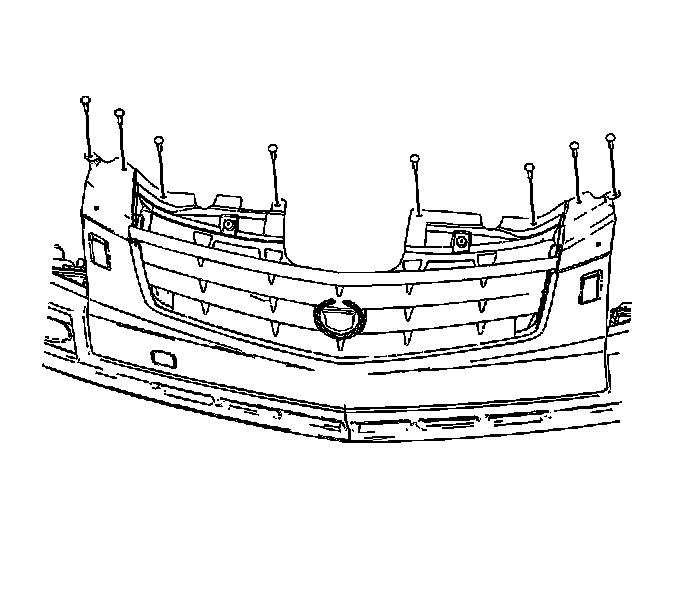
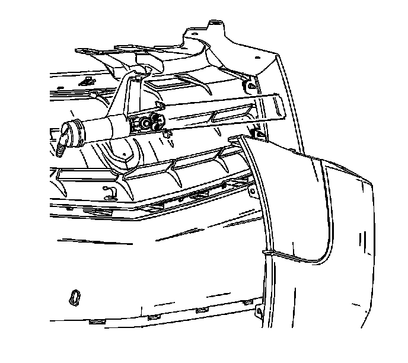
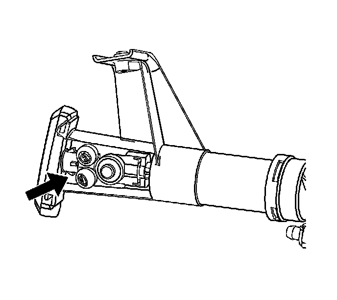

Headlamp Washer Spray Nozzle: Service and Repair
Headlamp Washer Nozzle Assembly Replacement
Removal Procedure

1. Remove the upper fascia/grille to tie bar push pins.
2. Remove the washer to fascia retaining screw.

3. Squeeze the locking tabs on the washer body to release the washer from the fascia.
4. Pull the nozzle shaft out. Lock the nozzle shaft extended in place with the washer body locking tabs.

5. Use a small flat-bladed too to release the trim cover from the headlamp washer nozzle.
6. Disconnect the fluid line. Remove the washer from the vehicle.
Installation Procedure
1. Lock the washer nozzle shaft extended. Position the washer nozzle shaft through the opening in the fascia.
2. Install the trim cover to the nozzle shaft.
3. Install the washer body locking tabs to the fascia.
4. Connect the fluid line.
5. Install the washer to the fascia with a retaining screw.
6. Install the fascia/grille to the tie bar push pins